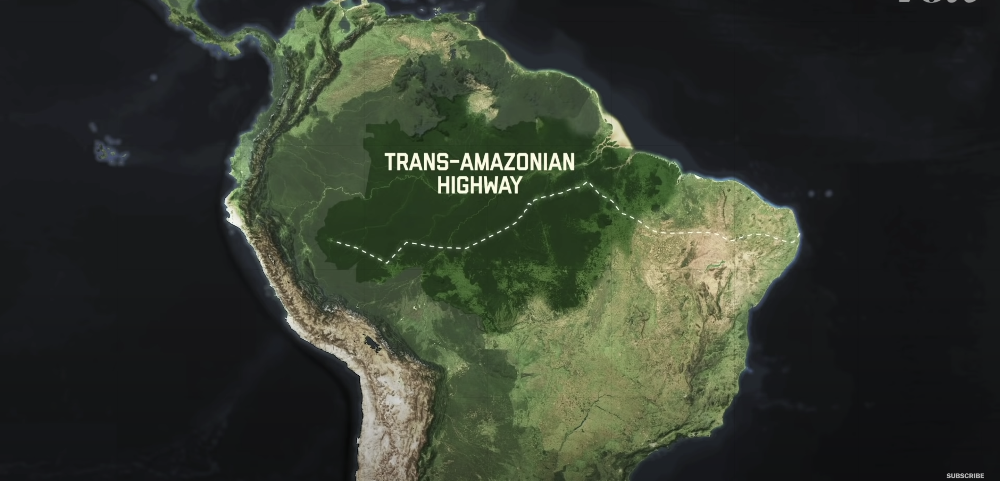
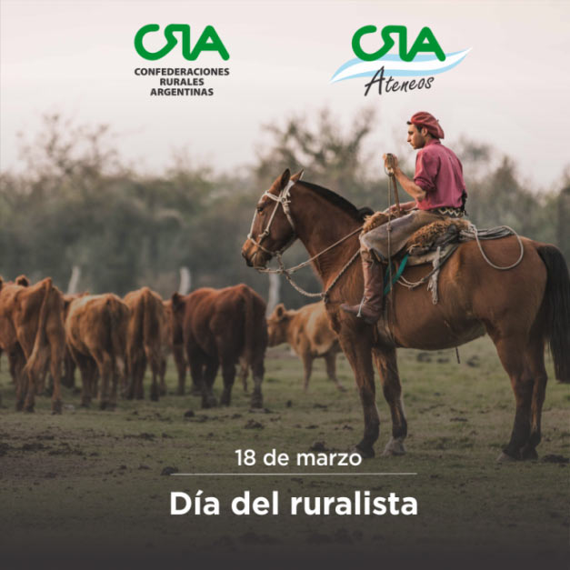
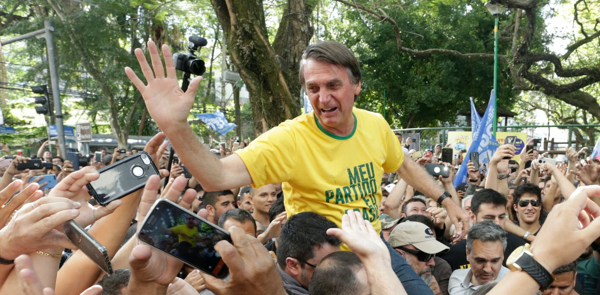

How we treated the Amazon
Introduction
In the 1980s the world learned the amazon was endangered. They also learned why it was important to save it. These reasons being the following. One-fifth of the worlds oxygen is from the amazon. 20% of the world’s fresh water. Half of the species that live on earth. Then around the 1900s people believed it was gone. The amazon was deforesting more than twice as fast. Around 2000s it started to be the opposite. The deforestation went way slower about 70%. The lowest it was ever in history since they started counting. Even though they saved it then they they needed to stay vigilant. Though after in 2019 they didn’t. The deforestation rate is more than ever before. It is being destroyed again. And It may not be saved this time. Now let’s go back and see why this is happened before.
TImeline
1970s:
Around the 1970s brazil’s military saw profit in the amazon. After all there was 5 million square kilometers of natural resources. They can get clean water, take its ores and minerals, food fibres and wood it provided seemed endless. Therefore most of the resources were to deep and inaccessible for humans.
1972:
The government started to build the trans amazonian high-way. This track would run 3200 kilo meter across the amazon connecting some part they can get to. The government also thought it would be better if people would live more north. Everyone levied in the capital or in places like Rio de Janeiro and São Paulo. Obviously they though since there is more land and in the amazon more people would live there and the economy would grow.
1975:
To do this they did a bad thing they offered free land in the amazon. They also paid people for living close to the rain-forest. As the trans amazonian high-way expanded so did people living in the amazon. The forest was deforesting at a alarming rate. Most people took down the trees of the amazon and made them a farm and a pasture. In a pasture they would raise cows and kill them to sell as beef. They continued to do this if they needed more land. They used more and more land since it was so cheap.

1990:
The part that the amazon was deforesting was known as the arc of deforestation. Then there was a spark for more meat. If people want more meat they needed more soybeans to raise the cows and animals. The Amazon rainforest was had the most soybeans then anywhere else on earth. The soybeans coming from brazil doubled from the 1990s to the 2005s. They did this by removing the pastures and turning them into soybean farms. The people used there pasture to create the soybean farms and moved there pasture more into the rain forest. They did this illegally. The government supported this since it was boosting the economy. This all came at the cost of the forest.

2007:
People then got really mad at how they treated the rainforest and the government finally did something. The government added stricter areas where it was not allowed to use. They also encouraged sustainable business these include nut harvesting and rubber tapping. These did not kill the rainforest. There final change was giving more land to indeginous people since they preserved the forest. After some time the amazon was a shared and sustainable place. Have the amazon was protected. They even also put requirements on the private land by saying only 20% of the land would be allowed to be flattened. There would be a group of the military that once wanted to deforest the forest is making sure people don’t over flatten there land. People also pressured fast food companies to stop participating in deforestation. They then signed a agreement saying they are allowed to only get soybeans from the forest. Other countries also helped by funding brazil to do this. You would think helping the amazon would lower the economy though it didn’t the soy and beef industry was still good because of better methods.

2012:
In the 2012 there was a party called the The ruralistas. They wanted it to be more profitable. They had 30% of the seats in congress and used it to make people be allowed to flatten more land. The made tried to make the security of the protection of the forest less. They also made it easier for people to have illegal land. This made the deforestation rate of the amazon rise.
2019:
Then the leader of the The ruralistas was elected president. He made the environmental ministry weaker and have the forest code to the The ruralistas, control. Deforestation began to raise in indegious areas where the government burned there land.
2021:
Right now 17% of the forest has been deforested. When it reaches 20-25% it will die. It won’t have enough water to cycle causing trees to die. This will release a immense amount of carbon into the atmosphere warming the planet. People are continuing to ignore science and deforestation the land.